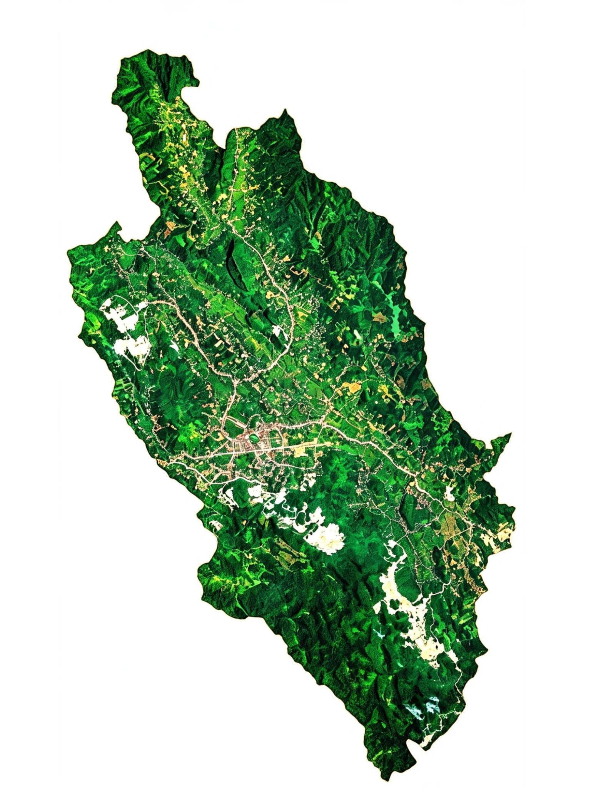
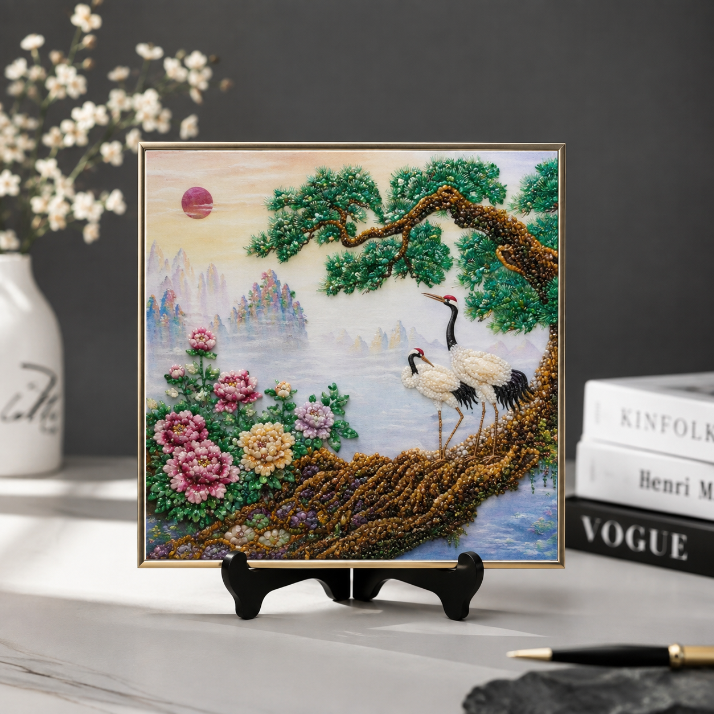
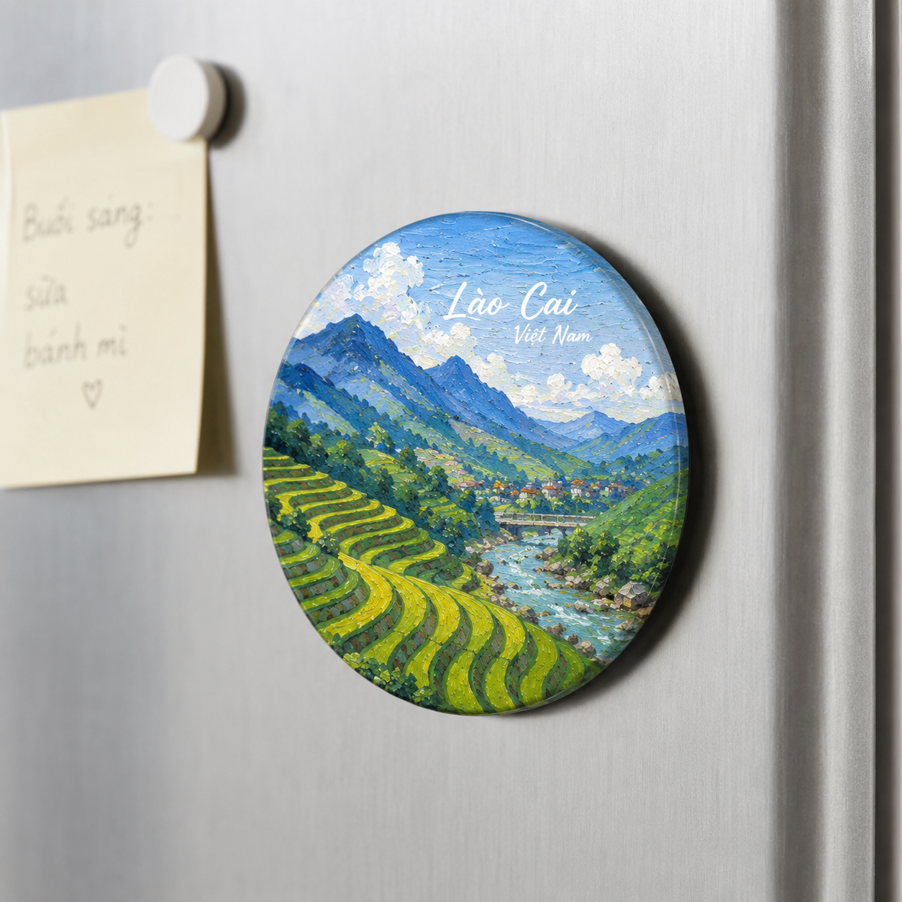
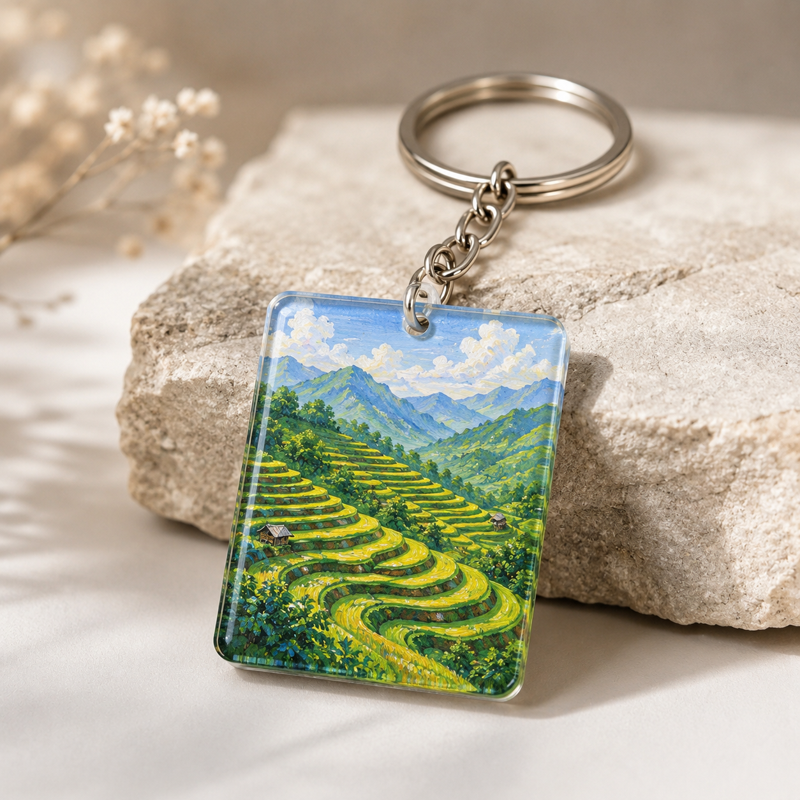

Khám phá nguồn đá quý
Nhiều mỏ đá quý có giá trị được phát hiện tại Lục Yên, mở đầu cho sự phát triển của ngành khai thác đá quý.
Ngọc miền di sản
Từ những mảnh đá quý của vùng đất Lục Yên, GEMVENIR tạo nên những món quà lưu niệm mang giá trị văn hóa, góp phần lan tỏa vẻ đẹp của vùng đất ngọc đến với mọi người.
Gemvenir là dự án quà tặng lưu niệm lấy cảm hứng từ vẻ đẹp của đá quý Lục Yên và bản sắc văn hóa Tây Bắc. Tận dụng đá vụn sau chế tác kết hợp với thiết kế hiện đại, Gemvenir tạo nên các sản phẩm như tranh đá mini, magnet và móc khóa mang giá trị thẩm mỹ, lưu niệm và văn hóa.
Mỗi sản phẩm không chỉ là một món quà mà còn kể câu chuyện về vùng đất ngọc Lục Yên, về những nghệ nhân gìn giữ nghề truyền thống và về khát vọng đưa văn hóa địa phương đến gần hơn với du khách trong và ngoài nước.

Lục Yên từ lâu được biết đến là "Vương quốc đá quý" của Việt Nam. Với điều kiện địa chất đặc biệt, nơi đây sở hữu nhiều loại đá quý nổi tiếng như Ruby, Sapphire, Spinel, Tourmaline... cùng những làng nghề chế tác truyền thống đã tồn tại qua nhiều thế hệ.
Một trong những loại đá quý nổi tiếng nhất tại Lục Yên.
Bản đồ phân bố các mỏ đá quý và khoáng sản đặc trưng.
Khám phá vẻ đẹp thiên nhiên và văn hóa của vùng đất ngọc.
Nơi lưu giữ kỹ thuật chế tác đá quý truyền thống.
Nhiều mỏ đá quý có giá trị được phát hiện tại Lục Yên, mở đầu cho sự phát triển của ngành khai thác đá quý.
Lục Yên trở thành một trong những khu vực khai thác đá quý nổi tiếng của Việt Nam.
Nhiều cơ sở chế tác đá quý thủ công được hình thành và phát triển, góp phần tạo việc làm cho người dân địa phương.
Dự án GEMVENIR ra đời với mong muốn lan tỏa giá trị văn hóa và nâng tầm quà lưu niệm từ vùng đất ngọc Lục Yên.
Từ những viên đá thô được khai thác tại vùng đất ngọc Lục Yên, các nghệ nhân bằng sự khéo léo, tỉ mỉ và nhiều năm kinh nghiệm đã tạo nên những sản phẩm mang giá trị nghệ thuật và văn hóa.
Mỗi đường cắt, mỗi công đoạn đánh bóng đều được thực hiện cẩn thận nhằm giữ lại vẻ đẹp tự nhiên của đá quý. Đó không chỉ là một nghề truyền thống mà còn là niềm tự hào của người dân địa phương.
Những món quà lưu niệm mang đậm bản sắc vùng đất ngọc Lục Yên.

Được chế tác từ đá quý và đá tự nhiên, phù hợp trang trí bàn làm việc hoặc làm quà tặng.

Quà lưu niệm nhỏ gọn với hình ảnh đặc trưng của Lục Yên.

Sản phẩm thủ công tinh tế, tiện dụng và mang giá trị lưu niệm.
Lựa chọn nguồn đá phù hợp.
Cắt, mài và đánh bóng.
Hoàn thiện sản phẩm thủ công.
Đóng gói và đến tay khách hàng.
Không chỉ tạo ra những món quà lưu niệm, GEMVENIR mong muốn lan tỏa những giá trị bền vững của vùng đất ngọc Lục Yên.
Biến những mảnh đá vụn sau chế tác thành các sản phẩm lưu niệm có giá trị, góp phần giảm lãng phí nguyên liệu.
Mỗi sản phẩm đều kể một câu chuyện về thiên nhiên, con người và bản sắc của vùng đất ngọc Lục Yên.
Góp phần quảng bá du lịch, hỗ trợ các nghệ nhân và đưa giá trị đá quý Lục Yên đến gần hơn với cộng đồng.
Ngọc miền di sản
Từ vùng đất ngọc Lục Yên, chúng tôi mong muốn lan tỏa những giá trị văn hóa Việt Nam thông qua từng sản phẩm lưu niệm.
Lục Yên, Lào Cai, Việt Nam
0965778762 - 0383872041
gemvenir@gmail.com
facebook.com/gemvenir
@gemvenir